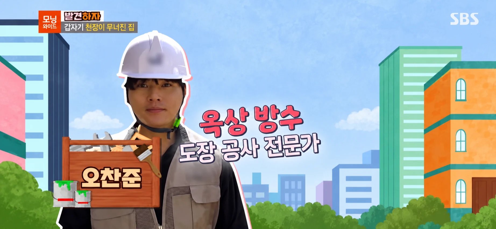
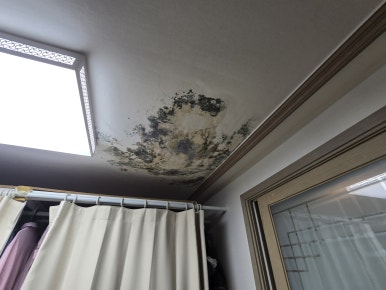
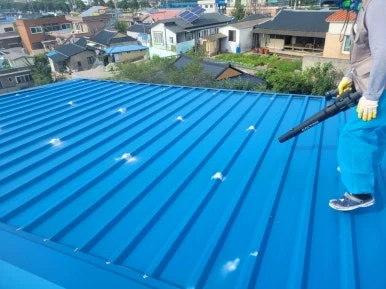
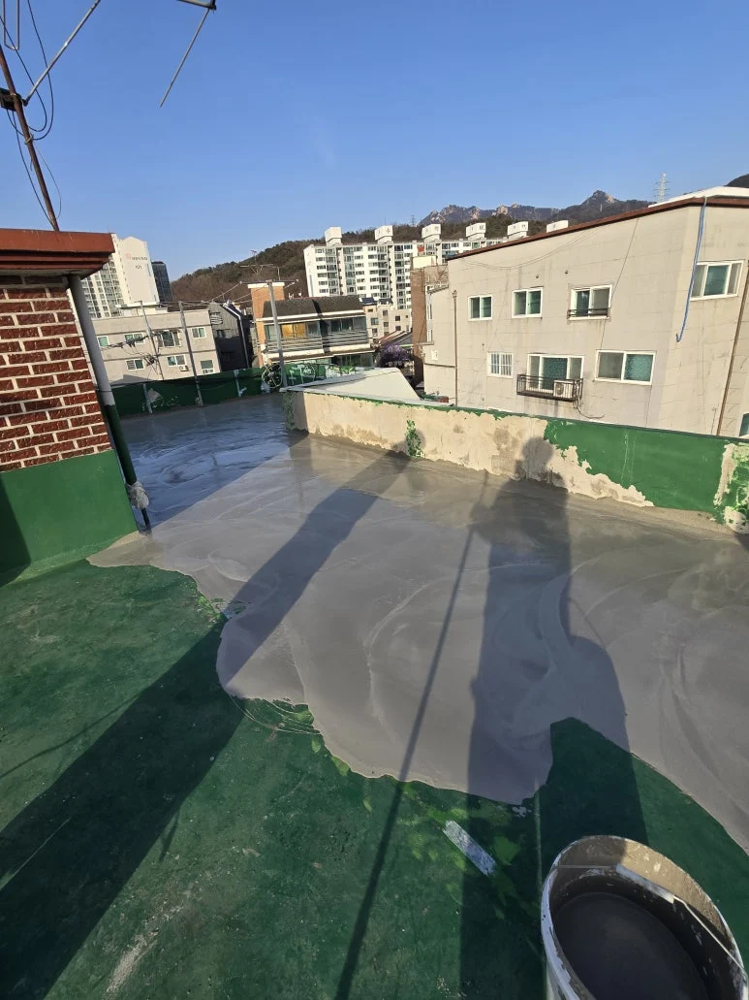
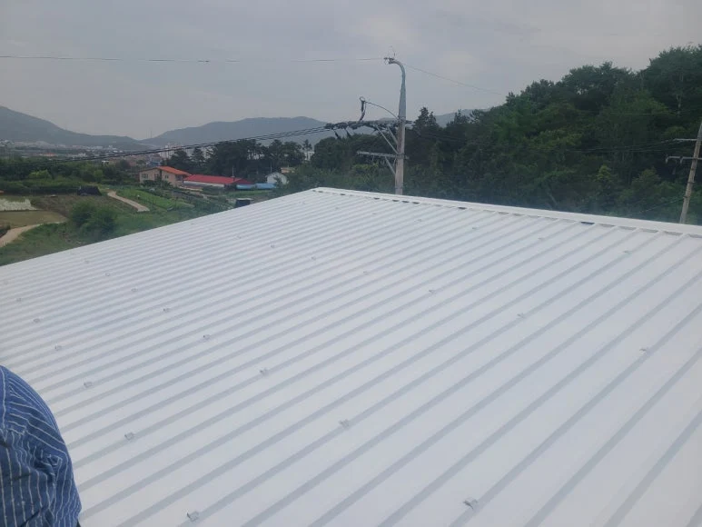

외벽부터 공장 지붕, 옥상까지
비가 와도,
마음은 편안하게.
덧칠하기 전에, 어디서 새는지부터.
우리 건물의 증상과 필요한 공사를 확인하세요.

방송 출연 화면 · 인물 편집본
SYMPTOM GUIDE
외벽, 공장 지붕, 옥상.
필요한 방수부터 확인하세요.
주요 시공 분야별 증상과 점검 항목입니다.
해당하는 분야를 펼쳐 확인하세요.
01 / 외벽 방수창문 주변 벽지에
물자국이 생겨요
물자국이 생겨요
외벽 균열과 창틀 주변 실리콘 등 빗물이 들어오는 경로를 확인합니다. 물자국 위치만으로 누수 지점을 단정하지 않습니다.
- 상담 전 기록
- 창문 전체와 얼룩 사진, 비가 올 때 심해지는지 여부
- 공사 전 확인
- 원인 확인 과정, 외벽 보수·코팅 범위와 고소작업 장비 비용
02 / 공장 지붕 방수공장 지붕에서
빗물이 떨어져요
빗물이 떨어져요
판넬 이음새, 고정핀, 용마루 패킹, 채광창, 배수로 막힘, 배수관 이음새 등 여섯 부위를 살핍니다.
- 상담 전 기록
- 실내에서 확인한 누수 위치, 생산·재고 피해와 작업 가능 시간
- 공사 전 확인
- 판넬 부식 정도, 부분 보수·시트·폴리우레아·덧방의 적용 범위
03 / 옥상 방수비가 오거나 눈이 녹을 때
천장에서 물이 새요
천장에서 물이 새요
옥상 방수층의 균열, 들뜸, 바닥 손상과 배수 상태를 함께 살펴야 합니다. 겨울에만 생기는 누수도 점검 대상입니다.
- 상담 전 기록
- 누수가 시작된 시점, 비·눈과의 관계, 천장 물자국 사진
- 공사 전 확인
- 기존 방수층 제거 범위, 바탕 보수, 시공·양생 가능한 날씨
그 외 누수·방수 안내
옥상 배수, 화장실, 주차장 등 다른 공간의 누수도 확인하세요.
04 / 옥상 배수비가 그쳐도 옥상에
물이 오래 고여요
물이 오래 고여요
바닥의 기울기인 구배와 우수관의 막힘·배수 능력을 함께 확인합니다. 방수제를 덧바르는 것만으로 물고임이 해결되지는 않을 수 있습니다.
- 상담 전 기록
- 안전한 위치에서 찍은 물고임 범위, 비가 그친 뒤 경과 시간
- 공사 전 확인
- 배수구 점검, 구배 조정 필요 여부, 방수공사와의 포함 관계
05 / 화장실화장실 천장이나
입구 벽지가 젖어요
입구 벽지가 젖어요
배관 문제인지 방수층 문제인지 먼저 구분해야 합니다. 석회질 흔적이나 물방울은 점검 단서이며, 사진만으로 원인을 확정할 수는 없습니다.
- 상담 전 기록
- 물 사용과 누수의 관계, 보이는 물자국, 윗집과 확인한 내용
- 공사 전 확인
- 철거·배관 주변·코너 보강 범위, 타일 마감 전 담수시험
06 / 주차장주차장 천장 누수로
차량이 젖어요
차량이 젖어요
상부 바닥 균열, 줄눈, 기존 도막과 스톱바 고정부 등 물이 유입되는 경로를 확인합니다. 유도판은 물을 우회시키는 조치이므로 원인 보수와 구분합니다.
- 상담 전 기록
- 누수 위치와 상부 공간, 주차 통제 가능 일정
- 공사 전 확인
- 기존 도막 제거, 균열 보수, 재도장, 차량 통행 재개 시점
증상 안내는 현장 진단을 대신하지 않습니다. 지붕이나 위험한 곳에 직접 올라가지 말고, 안전하게 확인할 수 있는 사진부터 준비하세요.
METHOD & COST
공법은 건물에 맞게.
비용은 조건까지 투명하게.
평당 금액만 비교하기보다
바탕 보수와 시공 두께를 함께 확인하세요.
바탕 상태가 양호한 경우의 참고 금액입니다. 실제 견적은 현장 상태와 시공 범위에 따라 달라집니다. 1평 ≈ 3.3㎡.
| 공법 | 시공 사양 | 참고 금액 / 평 | 견적에서 확인할 점 |
|---|---|---|---|
| 외벽 도막 코팅 | 현장별 사양 협의 | 3만원 | 균열 보수 · 장비 사용 여부 |
| 외벽 만능우레탄 | 현장별 사양 협의 | 6만원 | 적용 면적 · 바탕 보수 범위 |
| 공장 지붕 이음새 보수·도장 | 판넬 상태에 따라 적용 | 6만원 | 이음새 · 고정핀 · 부분 보수 범위 |
| 공장 지붕 시트·폴리우레아 | 판넬 상태에 따라 적용 | 25–28만원 | 부식 정도 · 방수층 구성 · 장비 |
| 공장 지붕 판넬 덧방 | 기존 판넬 상태 확인 | 30–40만원 | 손상 범위 · 판넬 사양 · 접근 장비 |
| 우레탄 방수 | 두께 3mm | 13만원 | 기존 도막 상태 · 바탕 보수 |
| 무기질 몰탈 방수 | 두께 3mm | 10만원 | 바탕면 상태 · 균열 대응 |
| 이중복합 시트 방수 | 시트 2.3mm + 우레탄 1mm | 18–20만원 | 시트 이음부 · 복합 시공 범위 |
| 폴리우레아 방수 | 두께 3mm | 25만원 | 기초 공정 · 장비 · 사용 재개 시점 |
철거·폐기물 처리·구배 조정·장비대·부가세의 포함 여부, 최소 공사비는 상담 시 확인해 주세요. 면적 × 단가만으로 최종 비용이 정해지지는 않습니다.
시공 비용 자세히 ↗차열도료 참고 비용도 궁금해요
차열도료: 7만원/평, 장비대 별도. 차열 시공의 효과는 지붕 재질과 현장 조건에 따라 달라지므로 특정 온도 저감을 보장하지 않습니다.
공장 지붕 시공 자세히 ↗ 차열도료 시공 자세히 ↗FROM THE FIELD
사진으로 보는, 현장의 답.

01 / 외벽 방수창틀 주변의 물자국, 외벽부터 살핍니다 ↗
외벽 균열과 창틀 실리콘 등 빗물의 유입 경로를 확인합니다. 원인에 맞춰 외벽 코팅과 창틀 보수 범위를 정합니다.

02 / 공장 지붕 방수판넬 상태에 따라, 필요한 보수도 다르게 ↗
해당 현장에서는 프라이머, 이음새 실리콘, 마감 도장 순서로 2일간 작업했습니다. 모든 현장의 공사기간이 같지는 않습니다.

03 / 옥상 방수방수 전에, 물이 빠지는 길부터 ↗
물고임 범위와 배수 상태를 살피고 바닥 기울기를 정리합니다. 작은 부분 보수와 넓은 면적 보수의 접근이 다릅니다.
추가 시공 사례 · 차열 도장

차열 도장여름철 지붕의 열까지 함께 생각하다 ↗
판넬 지붕 차열도료 시공 사례입니다. 누수 보수와 차열 목적을 구분하고, 지붕 상태에 맞는 공정을 확인합니다.
- 01
원인과 보수 범위
어디서 물이 들어오는지, 어떤 방법으로 확인했는지 물어보세요.
- 02
자재·두께·기초 공정
제품명, 시공 두께, 균열 보수와 기존 방수층 철거 범위를 확인하세요.
- 03
추가 비용과 일정
장비·폐기물·부가세 포함 여부, 양생 시간과 공간 사용 제한을 확인하세요.
- 04
완료 확인과 사후관리
누수 확인 방법, 보수 책임 범위·기간·제외 조건을 서면으로 남기세요.
QUESTIONS & ANSWERS
상담 전에
많이 궁금한 것들.
사진만 보내도 견적을 받을 수 있나요?
사진은 상담의 출발점입니다. 위치, 대략적인 면적, 누수 시점, 기존 공사 이력을 함께 알려주세요. 정확한 원인과 물량 확인이 필요하므로 최종 금액은 현장 조건을 확인한 뒤 결정해야 합니다.
기존 방수 위에 다시 칠하면 되나요?
기존 도막의 들뜸, 수분, 균열과 바탕 상태에 따라 달라집니다. 손상된 바탕을 그대로 둔 덧칠은 원인을 남길 수 있으므로 철거·보수 필요성을 먼저 확인하세요.
공사는 며칠 걸리고, 바로 사용할 수 있나요?
면적, 바탕 보수량, 공법, 날씨와 양생 조건에 따라 달라집니다. 도장 완료일과 보행·차량 통행이 가능한 날은 다를 수 있습니다. 견적에서 작업 일정과 사용 재개 시점을 따로 확인하세요.
겨울이나 비가 오는 날에도 공사하나요?
겨울철에는 우레탄·무기질 방수의 양생이 지연될 수 있습니다. 자재별 시공 조건과 현장 상태를 확인해 임시 보수와 본공사 일정을 구분하여 상담하세요.
출장 지역, 출장비와 A/S 기준은 어떻게 되나요?
가능 지역, 방문 일정, 출장비와 사후관리 조건은 전화 상담에서 확인해 주세요. 지역과 공사 범위에 따라 조건이 달라질 수 있습니다.
태양광 패널 세척·관리도 상담할 수 있나요?
기존 홈페이지에서 안내한 태양광 패널 세척·나노코팅도 상담할 수 있습니다. 작업 방식, 접근 장비, 오염 상태와 제품 조건에 따라 비용과 효과가 달라집니다. 태양광 관리 게시글 ↗
방수공사 후에도 다시 새면 어떻게 하나요?
이전 공사 위치와 시점, 재발한 날의 날씨, 물자국 변화 등을 기록해 원인을 다시 확인해야 합니다. 현장 조건에 따라 의심 구역을 나누어 물을 살포하는 방식으로 유입 경로를 확인합니다. 추가 피해가 생길 수 있으므로 시험은 전문가와 상의하세요. 원인 진단 사례 ↗
LET’S TALK
누수 걱정,
사진 한 장부터 이야기해 주세요.
건물 위치 · 누수 부위 · 발생 시점 · 대략적인 면적을
미리 알려주시면 상담에 도움이 됩니다.